Philip
Johnson
Collaborative Software Development
Laboratory
University of Hawaii
Last Update: 06/29/2005 11:05 AM
In June of 2005, Cedric and Hongbing implemented dual axis telemetry, which inspired me to organize a "Telemetry Plate Lunch Contest" and send out the following email:
Greetings, hackers,
Cedric sent me email indicating that dual axis telemetry is now available on the public server, and within five minutes I obtained this absolutely stunning example of co-varying sensor data:
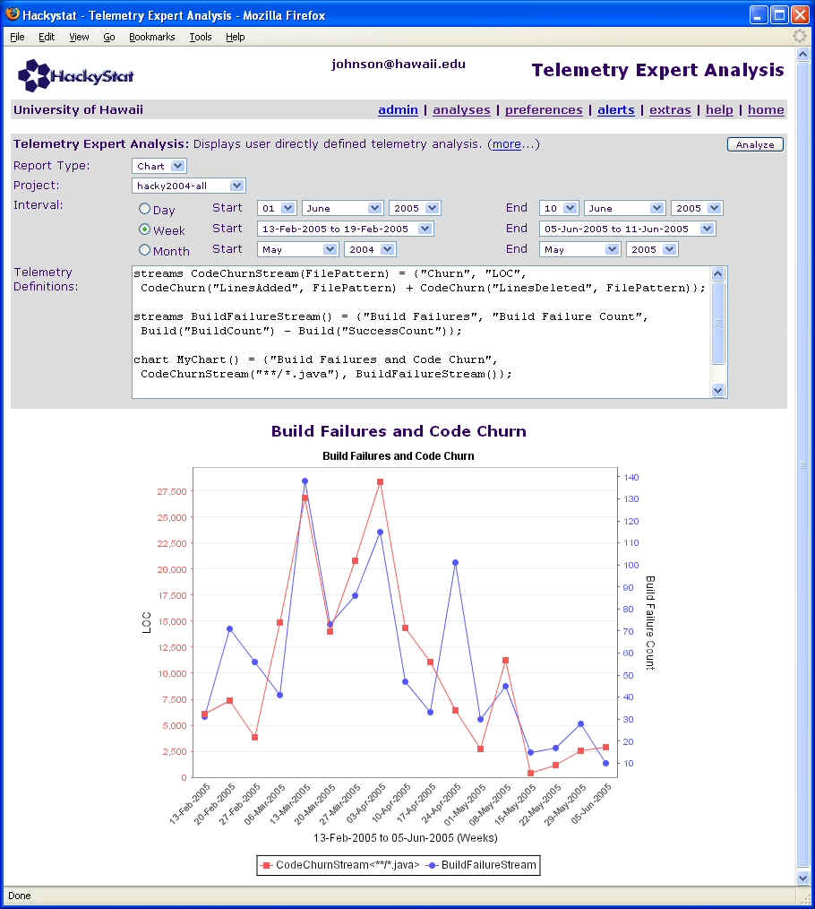
Some particularly cool things to note:
- I used Expert Mode, but the definitions are very straightforward. Six lines of code! (well, to be honest, the 'draw' command which is clipped in the figure makes seven.)
- The chart layout is just about perfect. Note how the axis colors align with the telemetry stream colors.
- The best part of all is the data! We're displaying real live data: build failures vs. code churn for the hackystat project over about a four month period. These are completely different sensor data types, but look how amazingly well they co-vary with each other.
Kudos to Hongbing for the JFreeChart/hackyReport hacking, and to Cedric for the telemetry language improvements.
TELEMETRY PLATE LUNCH CONTEST
Now that we've got this new facility, I'm curious to see what you guys can come up with. So, for the next week only, I'll buy a plate lunch for every hackystat hacker who can generate a similarly interesting multi-axis telemetry chart! (Note that 'interesting' could mean data that co-varies together, such as this chart, or data that goes in opposite directions. And you're not just limited to two axes or data streams!)
To enter, please use 'real' data such as that available on the public server, though it can be any project. Send me a pointer to a .jpg file illustrating your results.
I will send out email with the contest results late next week once all the submissions are in.
(Hackystat hackers not in Hawaii can still enter: I'll send you some macadamia nut cookies or something :-)
Cheers, Philip
Hi, Hackers,
Entry #1: Production Active Time vs Unit Test Failures (Zorro)
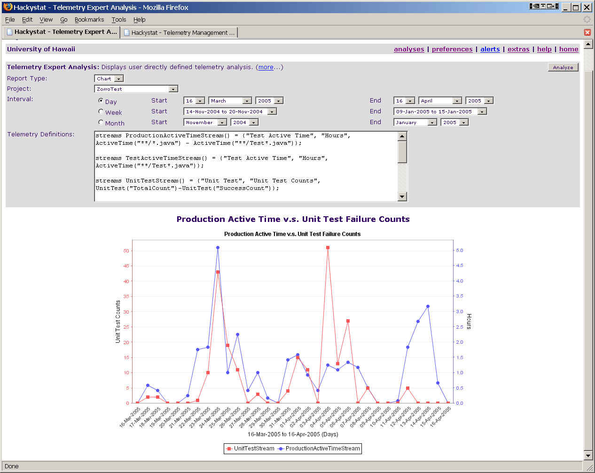
It's a telemetry chart that compares production code active time and unit test failures. Zorro has high code coverage. I believe most of my work are either Test-First or Test-Last.
Entry #2: Production Active Time vs Unit Test Failures (hacky2004-all)
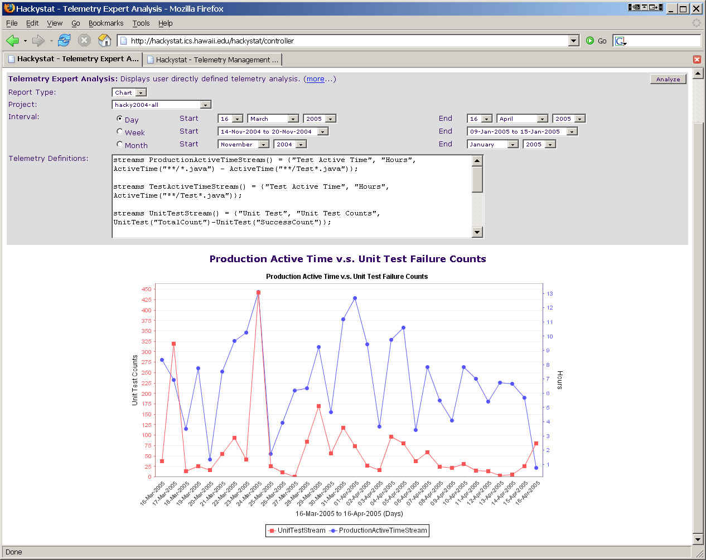
Note that scale of unit test count axis is different from entry #1. In most days active time on production code is above unit test failure counts. I think it tells us that we either did not have enough tests or that we were good at passing unit tests.
Below is my telemetry definition. Hope you will find it of interest to your project.
streams ProductionActiveTimeStream() = {"Production Active Time", "Production Hours", ActiveTime("**/*.java") - ActiveTime("**/Test*.java")};
streams TestActiveTimeStream() = {"Test Active Time", "Test Hours", ActiveTime("**/Test*.java")};
streams UnitTestStream() = {"Unit Test", "Unit Test Counts", UnitTest("TotalCount")-UnitTest("SuccessCount")};
chart PilotChart() = {"Production Active Time v.s. Unit Test Failure Counts", ProductionActiveTimeStream(), UnitTestStream()};
chart PilotChart2() = {"Test Active Time v.s. Unit Test Failure Counts", TestActiveTimeStream(), UnitTestStream()};
report PilotReport() = {"Active Time vs Unit Test", PilotChart(), PilotChart3()};
draw PilotChart();
Cheers, Hongbing
(Editor's note: Aaron's entry obeyed the spirit if not the letter of the contest rules, so he wins!)
I've spent a little while looking at Philip's telemetry example. And I'm not totally convinced that the BuildFailureStream is defined "correctly" in order to obtain meaningful information in terms of build failures and improving build failure rates.
After looking at Philip's telemetry chart, I quickly noticed that we had 138 build failures in the week of March 13. Wow! Now, I know Cedric said that we had only 88 nightly build failures during 2004. So, why the heck is one weeks build failures so high? The answer is that the Stream defined in Philip's example is from all developers including the nightly build.
I changed the BuildFailureStream to only look at nightly builds on HackyDev and now chart looks like the following, with almost _no_ co-variance.
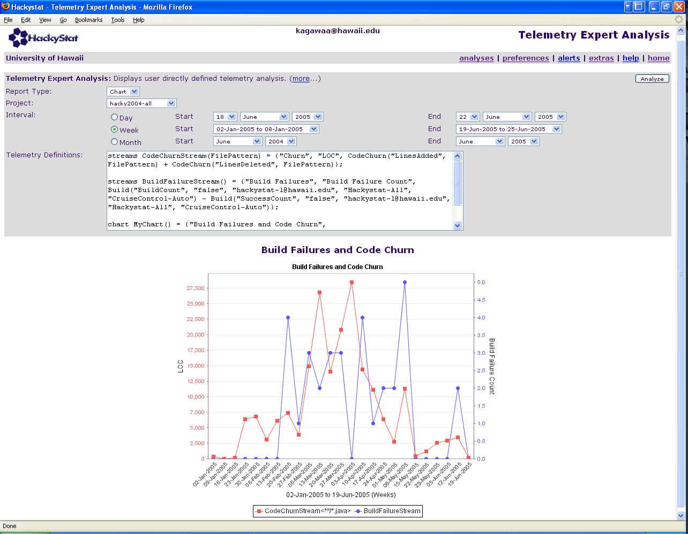
Based on this result, it seems that Code Churn has little effect on whether the nightly build will fail. One would think that the nightly builds are more meaningful in terms of our overall process, because developers could be doing TDD, have small little compile errors, minor junit problems, and other things that are just part of their personal development process; which will all hopefully be worked out before they commit the code.
I'm not saying that Philip's example is bogus. It its totally OK. Philip's Chart shows that the developers have more build failures when more code is checked in and vice versa. But, what does that mean? Using the total build count, instead of the total build failure count, shows another good co-variance:
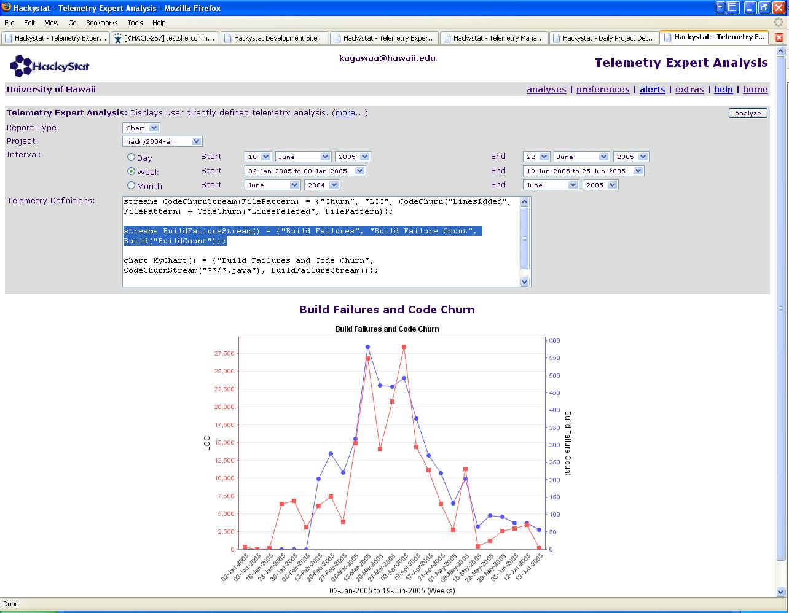And
I bet, if you only look the total build success count you'll also see a good fit. So, all build results co-vary with code churn.... again, what does that mean?
After studying the data used in Philip's telemetry chart, I would have to say, "yeah that makes sense, no surprise there". I say that because the two trends are somewhat directly related in our development process. For example, a week with a lot of churn probably means that the developers were working a lot. Which in our development process would require building and testing (ie ant quickStart, ant junitAll, etc) the system a lot. And it seems that there is some consistency in the number of build failures and successes in our personal development. So, I would think in our development process, Code Churn and Build (Failure, Success, and total Builds) should co-vary. If it doesn't then that could indicate that we aren't following our development process well.
I think the moral of the story is that we should be careful about claiming co-variance without saying whether it is expected or not expected. Or whether its a good thing or a bad thing. Its one thing to say that two trends co-vary that are usually dependent on one-another; for example increasing active time and increasing lines of code. Its another thing to say two trends co-vary that do not have a direct connection; for example increasing complexity and decreasing coverage. In the first example (active time and lines of code), it could be the case that co-variance is expected and a large variance between the two trends would indicate something bad. In the second example (complexity and coverage), co-variance might not be expected and variance might be something good.
------------------------
Various other telemetry related comments that popped into my head while doing this:
1) Other things that could be interesting is threshold limits; things that only co-vary when a certain threshold is reached. What is the mean code churn for the past 8 months? What is the mean build failure count for the past 8 months?
2) Could it be possible to exclude a developers data from a telemetry stream? With some sort of NOT, "!", language construct.
For example, when analyzing build failures for Cedric's research it seems that it might be best to exclude new Hackystat developers from a certain portion of his evaluation. Or exclude experience Hackystat developers from other portions of his evaluation. In other words, if Cedric introduces a new Feedback mechanism that tailored towards education of Hackystat's development process then it might be more beneficial to look at the new developers' data instead of every ones.
Another example, looking at the build failures from developers only, excluding the hackystat-l user.
2) cvsUpdateAll is considered to be a build event. I'm not sure why that is. At least for me, I can have up to 5 cvsUpdateAll's a day when I'm hacking, which could throw off the failure percentage because cvsUpdateAlls never really fail. Not to mention, cvsUpdateAll's aren't really building anything.
3) I noticed that the Unit Test Coverage telemetry report on HackyDev <http://hackystat.org/hackyDevSite/telemetry/DailyCoverage.0.png> appears to indicate that we are at 100% coverage:
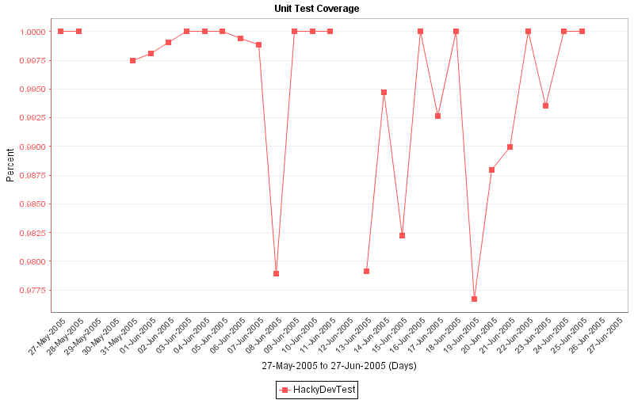
Which is obviously not correct, but how can that be? Are we using the wrong project for coverage data?
4) zero data points shouldn't be plotted <http://hackystat.org/hackyDevSite/telemetry/DailyIntegrationBuild.0.png>, <http://hackystat.org/hackyDevSite/telemetry/DailyOpenIssues.0.png>.. Well, it is hard to determine whether between the sensor not running and the value actually equaling zero.
5) Is aggregate active time useful in telemetry? It is only going to increase. Similarly, the total number of issues only increases. What does that mean?
6) It would be very useful to have alerts that tell you when telemetry trends stop co-varying and when they start to. I don't think this would take a lot of computing power.. and it seems that it is quite labor intensive (it is taking a plate lunch and a week) for us to look for interesting trends. For example, an alert that processes and compares all streams for a standard duration to determine if the latest data point is within an acceptable range based on previous ranges.
7) what ever happened to the telemetry wall? I think the telemetry wall could be a little more "general" to provide an overall concept of the project. NASA's control center doesn't just have telemetry screens.... Think Project Status wall instead of just telemetry.. It can show (1) the Daily Project Details information, (2) recent source code from the system (or the highest priority MINI document!!!!!!! haha!!!), (3) a commit log, (4) how many hits Hackystat had yesterday, (5) the remaining Jira Issues for the upcoming release, (6) christoph's visual project graph, (7) a satisfied or failed CGQM goal, (8) a successful SDSA classification, and finally (9) then a bunch of interesting multi-axis telemetry charts.
thanks, aaron
Hi Philip,
Below is a link to my entry for the "Telemetry Plate Lunch Contest":
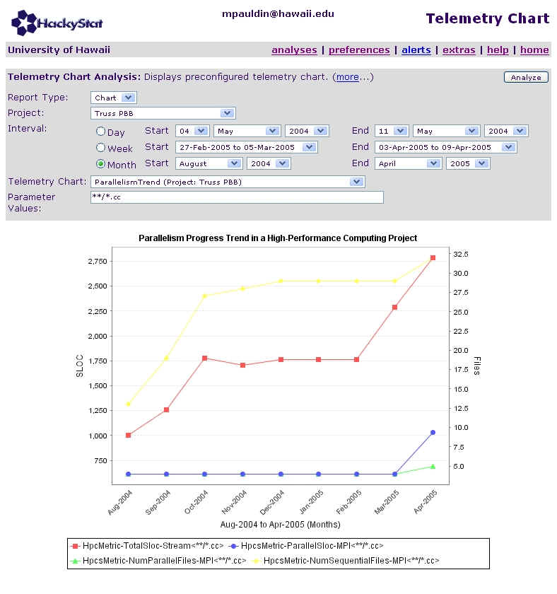
This chart indicates the introduction and progress of parallelism within a HPC project. Specifically, it shows when parallel files/constructs first made an appearance in the project and quantifies how the parallel files grew over time, measured in SLOC.
It also compares the total SLOC within the HPC project against the parallel SLOC, so the observer is provided a visual ratio of the parallel/sequential composition of the project.
It can be generated with data on the public server from the Truss problem.
Thanks and best regards, Mike
Hackystat Local System Build Time
The local build of Hackystat modules is interesting. The build time is not short enough so that it's ignorable. The build time is not long enough so that the developer can take a coffee break or engage other parallel activities. Under most cases, the developer cannot make use of the idle time but waiting for the build result. One minute taken by the local build is one minute wasted on the developer's part.
The following telemetry charts are used to study local system build time by individual developers.
streams MyActiveTime(member) = { "d", "hours", MemberActiveTime("**", "false", member) };
streams MyBuildTime(member) = { "d", "hours", Build("BuildTime", "false", member) };
streams MyFailedBuildTime(member) = { "d", "hours", Build("BuildTime", "false", member) - Build("SuccessTime", "false", member) };
chart MyChart(member) = { "chart", MyActiveTime(member), MyBuildTime(member), MyFailedBuildTime(member) };
draw MyChart("???@hawaii.edu");
Some developers only spend 0.25 - 0.5 hours daily waiting for local system build results. But other developers spend considerable more time. "Lofi" spends around 1 hours; "Kagawaa" seems addicted to building system locally. If these developers can change their development habits, they can have more time enjoying life.
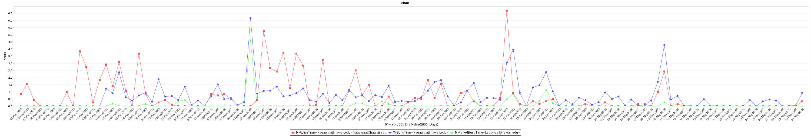
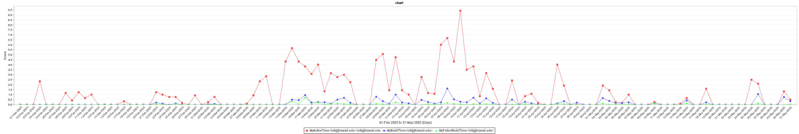
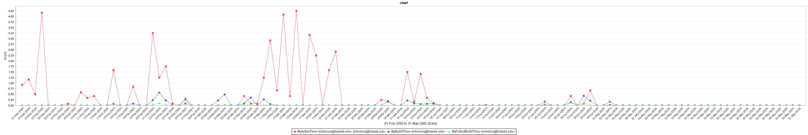
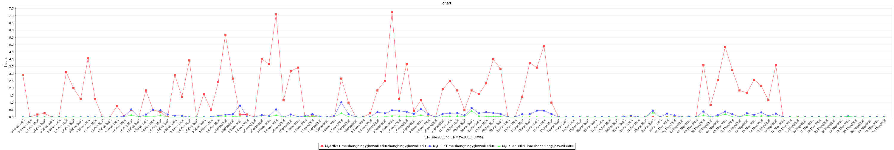
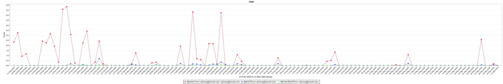
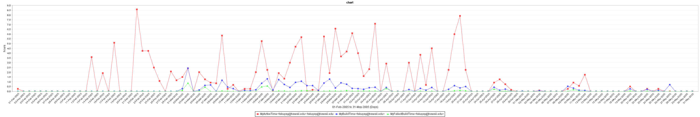
My own entry was disqualified, since employees of the Telemetry Plate Lunch Contest organization are prohibited from participating. :-) However, the contest did inspire me to take another look at Unit Test Dynamics, with what I think are some interesting results:
<http://csdl.ics.hawaii.edu/~johnson/UnitTestDynamics.ppt>
I'll show a couple of charts to give you the idea. For details on UTD and the telemetry definitions used to get these charts, please check out the powerpoint.
The following chart shows that in HackyKernel, coverage has been decreasing while the percentage of test code has been increasing! This cannot be a good thing!
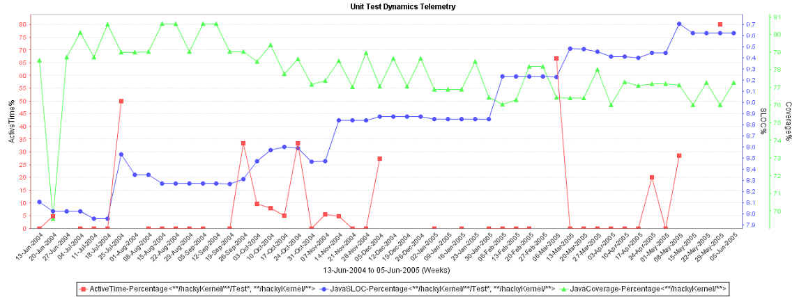
The following chart shows that in HackyZorro, at the beginning of the module's life when Hongbing was doing TDD, coverage, test code, and test time was all very high. When he stopped doing TDD, everything plummeted! Also probably not good!
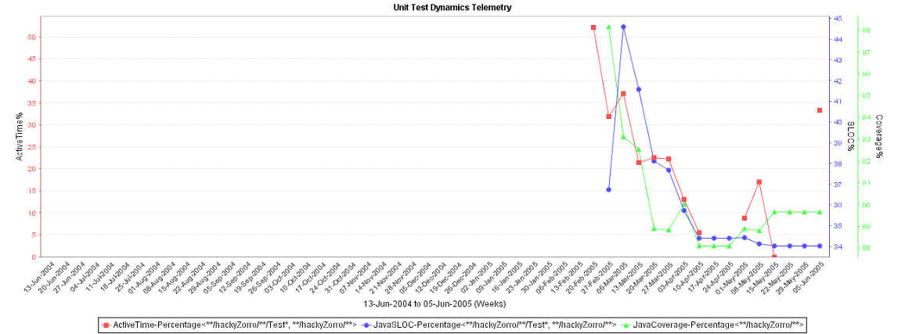
First, I have to say that I'm very pleased with the results. The entries show that this technology is allowing people to begin to think more deeply about the meaning, implications, and inter-relationships of the metrics they generate.
Here are some thoughts on the submissions:
Production Active Time vs. Unit Test Failures (Zorro). This chart is interesting because from 16-March to 02-April, the two measures co-vary 'in phase', while after that the two measures co-vary 'out of phase'. I wonder if this 'inversion' in the relationship has to do with the switch from test-first to test-last design?
Although I agree with Aaron that, in retrospect, the fact that code churn correlates with total build attempts/failures seems "obvious". But, that doesn't make it uninteresting or not useful. For example, does the correlation hold up when looked at for individual developers? If it doesn't, does that indicate that some developers are not building when they should?
Other comments by Aaron are also interesting. The fact that cvsUpdates are counted as "build events" may or may not be bad, but at least indicate that we may want to investigate streams that filter out some of the build events. We definitely need to fix the daily telemetry chart that shows 100% coverage.
Mike's entry appears to use 'cumulative' data. After looking at that, I am worried that 'cumulative' data might be very susceptible to distortion when using multiple axes such that things appear to co-vary when they in fact do not. The reason is that the axes are drawn so that the scale includes just the lowest and highest value. Well, with cumulative data, the lowest value is generally on the left and the highest value is generally on the right. If those to points are fixed at about the same point, then it's likely the middle part of the trend lines will appear to co-vary. So, that's something we need to watch out for: we shouldn't use cumulative data if we can avoid it.
Cedric's entry shows that we need a way to show project-specific build timing data. I think that might need to wait until evolutionary sensor data types are implemented. In any case, investigating local build time is a really neat idea. It's not at all clear to me that low local build times are better than high local build times. What we need to do is relate this data to other trends, such as integration build failures, experience level of developers, and so forth.
All in all, lots of interesting food for thought. Please send any further comments you might have to me.